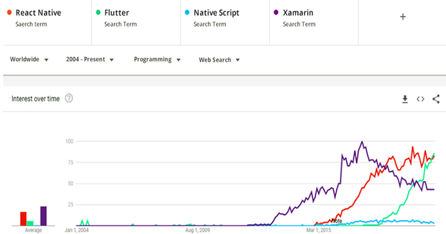

Flutter is an open-source mobile UI framework by Google. It was released in May 2017 and the purpose behind creating Flutter was to enable users to create native mobile applications with only one codebase. In summary, it means to use a single programming language to create two different apps, one for iOS and one for Android.
Flutter is a framework that uses the programming language called Dart. The language is a lot older than the framework itself and it was first created by Google in October 2011. It has improved a lot in the past few years and a major reason behind that is the continuous development by Google.
The reason behind learning Flutter is because of the following reasons:
It is simple to learn. Since it is based on a framework, you don’t have to start everything from scratch. The best part about Flutter is that it is a comprehensive documentation available and a great community around it.
You can publish to iOS and Android with the same course. No need to develop two different code bases for publishing your app.
Google Code labs offer guided tutorials for getting started with Flutter and launching your first project without any external help.
Flutter can increase user productivity exponentially through performance-focused code and a powerful UI experience made possiblebecause of Flutter widgets.
The popularity of Flutter can be easily gauged through this diagram.

As you can see in the past few years many people have started using Flutter because of its ease of use. Google, GROUPON, eBay, and Alibaba Group are also using Flutter to improve the robustness of their apps in a short time.
Now that we are familiar with Flutter, it is time to get started with this programming framework.
To get started, download Flutter SDK for your platform (Windows, macOS, Linux or Chrome OS) from this link: https://flutter.dev/docs/get-started/install. We will be using Mac to go through the whole installation process.
1 - Extract the files to your desired location (for example: ~/development)
$ cd ~/development
$ unzip ~/Downloads/flutter_macos_1.20.2-stable.zip
2 - Add Flutter tool to your path.
$ export PATH="$PATH:`pwd`/flutter/bin"
3 - Download Flutter pre-development binaries by running the following code:
$ flutter precache
4 - Check if you have missed anything during the installation of Flutter SDK with the following command:
$ flutter doctor
This command tells how and what dependencies need to be added to Flutter to make it work without any error. For example, you can find out if there’s a configuration error, like missing command-line tools in Android SDK:
[!] Android toolchain - develop for Android devices
• Android SDK at /usr/local/Caskroom/android-platform-tools/27.0.1
• Android NDK location not configured (optional; useful for native profiling support)
• ANDROID_HOME = /usr/local/Caskroom/android-sdk/3859397
✗ Android SDK is missing command line tools;
• Try re-installing or updating your Android SDK,
visit https://flutter.io/setup/#android-setup for detailed instructions.
This error means that you won’t be able to build any Flutter project until you fix it. The following output contains some warning that can be ignored:
Doctor summary (to see all details, run flutter doctor -v):
[✓] Flutter (Channel stable, 1.20.2, on Mac OS X 10.15.5 19F101, locale it)
[✓] Android toolchain - develop for Android devices (Android SDK version 29.0.3)
[✓] Xcode - develop for iOS and macOS (Xcode 11.6)
[✓] Android Studio (version 4.0)
[!] IntelliJ IDEA Ultimate Edition (version 2020.2)
✗ Flutter plugin not installed; this adds Flutter specific functionality.
✗ Dart plugin not installed; this adds Dart specific functionality.
[!] VS Code (version 1.44.2)
✗ Flutter extension not installed; install from
https://marketplace.visualstudio.com/items?itemName=Dart-Code.flutter
[!] Connected device
! No devices available
! Doctor found issues in 3 categories.
In this case the sdk is correctly configured supposing that we work with Android Studio and not with IntelliJ or Visual Studio code.
The message ! No devices available just means that no physical device is actually connected and no emulator is running. We can continue to develop and build our application without any attached device; we’ll need to attach a device (or start emulator) only when we want to launch the app.
Starting from release 1.19.0, the Flutter SDK already contains the dart command alongside the flutter command. But if you installed Flutter and Dart at different times, you need to double check paths. Xcode won’t work if the assigned path of Flutter and Dart programming language is different. So you need to assign the same path to both of them. Here is an example of the wrong assigned path.
$ which flutter dart
/path-to-flutter-sdk/bin/flutter
/usr/local/bin/dart
As you can see, files are placed in different bin directories.
Fix your path env variable until you get an output like this:
$ which flutter dart
/path-to-flutter-sdk/bin/flutter
/path-to-flutter-sdk/bin/dart
Mac needs to install Xcode to run the Flutter framework. So, download and install Xcode on your Mac system.
$ sudo xcode-select \--switch /Applications/Xcode.app/Contents/Developer
$ sudo xcodebuild -runFirstLaunch
Make sure that Xcode license agreement is signed, or else your mobile application won’t reach the build stage. To do so, type:
$ sudo xcodebuild -license
Xcode offers a mobile application emulator so that you can test the apps that you have created in a virtual environment. Type the following command to run the Xcode emulator.
$ open -a Simulator
Once you successfully run your Xcode simulator, you can start creating your first Flutter app.
Type the following command to start creating your app.
$ flutter create my_flutter_app
You will see a directory created. Enter this directory by typing the folder name in the console.
$ cd my_flutter_app
Once you have created your first app, you can launch it on the iOS emulator using the following command.
$ flutter run
If you are interested in developing your web project using Flutter, you will need to learn everything about how Flutter works. Here are some of the best resources that can help you do that.
This is the official documentation for learning everything about the Dart programming language. The documentation covers every aspect of Dart language, from Hello World to more advanced concepts like Effective Dart.
Want to create an app but don’t want to start from scratch? That’s where the Flutter gallery comes in. It offers bits and pieces that you can join together to create what you want. Just like Lego.
So you want to start learning Flutter? The best way to learn a new framework is through a proper book. Books offer comprehensive experience and they cover the whole subject from top to bottom making it easier for users to easily grasp new concepts without worry. Flutter for Beginners is a great book to learn Flutter.
I personally love free courses on anything that can create value in my life. As a developer, I love all courses related to Flutter that can enhance my knowledge. The Flutter development course by Reso Coder is a great resource for beginners.
Finally, another great resource for learning all about the Flutter framework and staying updated on the latest developments is the Flutter newsletter. Simply subscribe to the newsletter if you already know Flutter but want to stay up to date on the latest happenings about the programming framework in the digital arena.
Feeling excited? So am I!
Flutter development opens many new opportunities for users who would like to stay at the edge of their game. With Flutter, people can cut their costs of developing applications. Where they were building multiple applications, they can now use a single application that will work cross-platform without a problem.
If you still have any questions left, please feel free to ask us in the comment box below.
Pubblicato il August 22nd , 2020 by Andrea Maglie